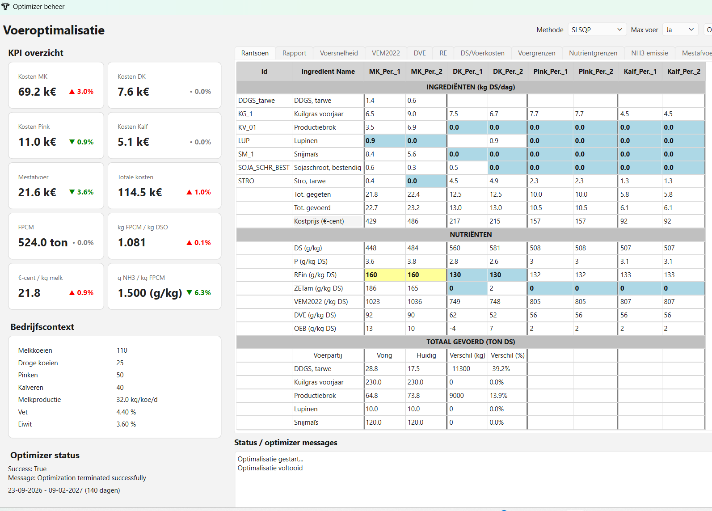

01 / ADVIES
Voedingsadvies
Onderbouwde ondersteuning bij vraagstukken over rantsoensamenstelling, nutriëntenvoorziening en efficiënt gebruik van voedermiddelen.
Voervoorraad • Voeroptimalisatie • Economisch resultaat
De Voerplanner helpt melkveehouders om eigen kuilgras, snijmais en andere voedermiddelen optimaal te benutten. Plan de verdeling van voer over diercategorieën en perioden en maak onderbouwde keuzes bij de aankoop van aanvullende voedermiddelen.
Wat we doen
Goede beslissingen beginnen met inzicht. Spek Voeradvies combineert kennis van dierlijke voeding met een analytische benadering van rantsoenen, grondstoffen en bedrijfsresultaten.
Onderbouwde ondersteuning bij vraagstukken over rantsoensamenstelling, nutriëntenvoorziening en efficiënt gebruik van voedermiddelen.
Data omzetten in bruikbare inzichten. We helpen verbanden zichtbaar te maken en keuzes rond voerkosten en benutting te beoordelen.
Praktische software die berekeningen en analyses ondersteunt, zodat voedingskundige keuzes transparanter en beter vergelijkbaar worden.
De slimme voerplanning van Spek Voeradvies
De Voerplanner brengt voervoorraden, dierbehoeften, voedingskundige randvoorwaarden en voerprijzen samen. Zo krijg je inzicht in de optimale inzet van eigen voer en in de voedermiddelen die je het beste kunt aankopen.
Kuilgras, snijmais en andere beschikbare voedermiddelen vormen het uitgangspunt. Onderzoek hoe deze voorraden zo goed mogelijk kunnen worden benut binnen de gewenste rantsoenen en voedertechnische randvoorwaarden.
Plan de inzet van beschikbare voorraden over de gewenste perioden en diergroepen, zoals lacterende koeien, droogstaande koeien, pinken en kalveren. Stem de voerplanning af op de behoeften van de verschillende diercategorieën en de beschikbare voorraad.
Gebruik prijsinformatie van voedermiddelen die je kunt aankopen om alternatieven te beoordelen. De optimalisatie zoekt naar een economisch gunstige combinatie van voedermiddelen, rekening houdend met de ingestelde voedingskundige eisen en voergrenzen.
Ontdek hoe de Voerplanner kan helpen bij de voerplanning en economische afwegingen op jouw melkveebedrijf.

Voerplanner — analyse en optimalisatie van rantsoenen.
Over Spek Voeradvies
Spek Voeradvies richt zich op de praktische toepassing van wetenschappelijke inzichten in rundveevoeding. Het doel: bijdragen aan rendabele en toekomstbestendige melkveebedrijven met advies en hulpmiddelen die inhoudelijk kloppen én in de praktijk bruikbaar zijn.
Daarbij staan een zorgvuldige analyse, transparante onderbouwing en oog voor de dagelijkse praktijk centraal.
Bespreek jouw vraagstukSamen aan de slag
Contact
Neem contact op voor vragen over voeradvies, data-analyse of de mogelijkheden van Voerplanner.